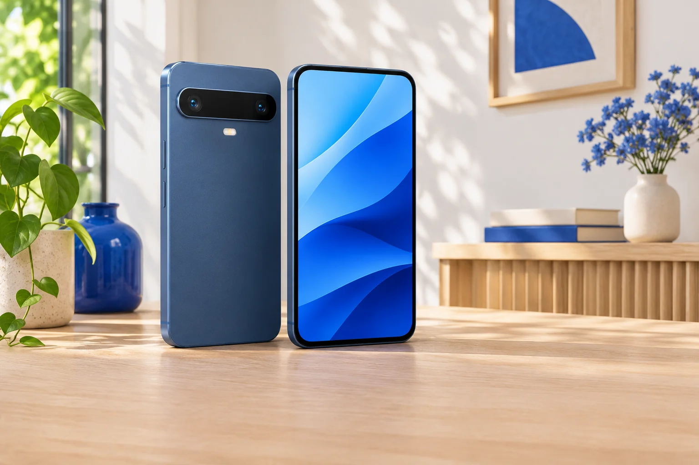

GASTAR MENOS (LINHA FE)
Melhor Galaxy S custo-benefício
Câmera com zoom, tela de 120 Hz, IP68 e 7 anos de atualizações pelo menor preço.

Melhor custo-benefício da linha Galaxy SGalaxy S25 FE 128 GB
CURADORIA TECHAPROVADO · 2026
Todos os Galaxy S à venda têm tela de 120 Hz, câmera com zoom óptico, proteção IP68 e sete anos de atualizações. O que muda é o tamanho, a força da câmera e o quanto você aceita pagar por isso. Separamos 5 modelos em 3 perfis e mostramos o que se ganha a cada degrau.

NOSSA LEITURA
Quem quer um celular que caiba numa mão só tem uma opção: o S26, de 6,3 polegadas. Quem quer tela grande escolhe entre FE, S26+ e Ultra. Daí em diante, a pergunta é a câmera: o zoom de 3x dos FE, S26 e S26+ resolve o dia a dia; o Ultra, com zoom de 5x e câmera de 200 MP, é para quem fotografa palco, viagem e detalhe de longe.
COMECE POR AQUI
GASTAR MENOS (LINHA FE)
Câmera com zoom, tela de 120 Hz, IP68 e 7 anos de atualizações pelo menor preço.
TOPO DE LINHA: COMPACTO OU GRANDE
Mesmo chip e mesma câmera; muda o tamanho da tela e da bateria.

CÂMERA DE LONGE E S PEN
Zoom de 5x, câmera de 200 MP, caneta e a maior bateria da linha.

A FICHA, TRADUZIDA
01 - TAMANHO
A tela define o tamanho do celular. O S26 tem 6,3 polegadas e cabe bem numa mão. S25 FE, S26 FE e S26+ têm 6,7 polegadas. O S26 Ultra tem 6,9 polegadas e é o mais pesado.
Tela grande é melhor para vídeo, leitura e dois apps lado a lado. Celular compacto é melhor para usar com uma mão e cabe em qualquer bolso.
Muita gente compra o maior e depois sente o peso no bolso e na mão. Se você usa o celular deitado, no ônibus ou com uma mão, pese isso antes do processador.
02 - CÂMERA E ZOOM
Todos têm câmera principal, ultra-angular e teleobjetiva. Nos FE, S26 e S26+, a teleobjetiva aproxima 3 vezes. O S26 Ultra tem duas: 3x e 5x, e câmera principal de 200 MP.
Para foto de pessoas, comida e paisagem, a diferença entre os modelos é pequena. O zoom de 5x faz diferença em show, palco, esporte e viagem, quando o que importa está longe.
Megapixel a mais não garante foto melhor no escuro. O ganho real do Ultra está no zoom maior, não no número de 200 MP.
03 - BATERIA E RECARGA
A bateria acompanha o tamanho. S26: 4.300 mAh segundo a ficha publicada pela Oficina da Net (a página de suporte da Samsung Brasil informa 4.100 mAh; considere o menor). S25 FE, S26 FE e S26+: 4.900 mAh. S26 Ultra: 5.000 mAh.
Recarga com fio: 25 W no S26, 45 W no S25 FE, S26 FE e S26+, 60 W no Ultra. O carregador rápido costuma ser vendido à parte; o S26 FE traz um de 25 W na caixa.
Quem passa o dia longe da tomada deve fugir do S26 compacto: a bateria menor é o preço do tamanho.
04 - PROCESSADOR
No Brasil, S26 e S26+ usam o Exynos 2600, o S26 FE usa o Exynos 2500 e o S25 FE, o Exynos 2400. O S26 Ultra usa o Snapdragon 8 Elite Gen 5.
Para redes sociais, foto, vídeo e jogos comuns, todos sobram. A diferença aparece em jogo pesado por muito tempo e em edição de vídeo.
Nesta pesquisa não usamos testes de desempenho de terceiros. Por isso não dizemos quanto um é mais rápido que o outro; dizemos só o chip de cada um.
05 - S PEN E TELA PRIVATIVA
Só o S26 Ultra tem caneta S Pen guardada no corpo e a Tela de Privacidade, que esconde o conteúdo de quem olha de lado, segundo a Samsung.
A caneta ajuda a anotar, assinar e recortar imagem com precisão. A tela privativa agrada a quem usa o celular no transporte e em lugares cheios.
Se você nunca usou caneta no celular, não conte com ela para justificar o Ultra: o zoom é o motivo mais comum para subir.
A CURADORIA EM DETALHE
5 modelos da pesquisa
PERFIL · 2 MODELOS, DA ENTRADA AO TOP DE LINHA
Os FE (Fan Edition) mantêm o que mais aparece no dia a dia dos Galaxy S, como tela, zoom óptico, IP68 e atualizações, e economizam no processador e na recarga.
FE · CUSTO-BENEFÍCIO 1 de 2
Melhor custo-benefício da linha Galaxy S
6,7" 120 Hz · Exynos 2400 · zoom óptico 3x · 7 anos de atualizações
Ver preço na AmazonPOR DENTRO DA ESCOLHA
O Galaxy S de 2025 com cara de topo de linha: tela de 6,7 polegadas com 120 Hz, câmera de 50 MP com estabilização, ultra-angular de 12 MP e teleobjetiva de 8 MP com zoom óptico de 3x, IP68 e bateria de 4.900 mAh com recarga de 45 W. Processador Exynos 2400 e 8 GB de RAM.
Pelo preço que aparece na Black Friday, é o Galaxy S que mais entrega por real gasto. A diferença para o S26 FE é pequena: se o S25 FE estiver bem mais barato, fique com ele.
| Tela | 6,7" AMOLED, 120 Hz |
|---|---|
| Processador | Exynos 2400 (4 nm) |
| Memória | 8 GB de RAM · 128 GB |
| Câmeras | 50 MP + 12 MP ultra + 8 MP tele 3x · frontal 12 MP |
| Bateria | 4.900 mAh · recarga 45 W |
| Proteção | IP68 |
| Atualizações | 7 anos |
Fonte: ficha e descrição do anúncio, conferidas em 26/11/2026. Dados informados pelo fabricante.

FE · INTERMEDIÁRIO 2 de 2
6,7" 120 Hz · Exynos 2500 · zoom óptico 3x · carregador na caixa
Ver preço na AmazonPOR DENTRO DA ESCOLHA
O FE de 2026: processador Exynos 2500 de 3 nm, 8 GB de RAM, tela de 6,7 polegadas com até 1.900 nits, as mesmas câmeras do S25 FE, 4.900 mAh com recarga de 45 W e Gorilla Glass Victus+ dos dois lados. Vem com carregador de 25 W.
É a escolha para quem quer o FE mais recente. A conta é simples: se a diferença para o S25 FE for pequena, vale o S26 FE; se for grande, o S25 FE entrega quase o mesmo. Escrevemos uma análise completa dele na notícia de Black Friday.
| Tela | 6,7" AMOLED, 120 Hz, até 1.900 nits |
|---|---|
| Processador | Exynos 2500 (3 nm) |
| Memória | 8 GB de RAM · 128 GB |
| Câmeras | 50 MP + 12 MP ultra + 8 MP tele 3x · frontal 12 MP |
| Bateria | 4.900 mAh · recarga 45 W (25 W na caixa) |
| Proteção | IP68 · Gorilla Glass Victus+ |
| Atualizações | 7 anos |
Fonte: ficha e descrição do anúncio, conferidas em 26/11/2026. Dados informados pelo fabricante.
PERFIL · 2 MODELOS, DA ENTRADA AO TOP DE LINHA
S26 e S26+ têm o mesmo processador, a mesma câmera e 12 GB de RAM. A escolha é entre um celular que cabe na mão e uma tela grande com bateria maior.
S26 E S26+ · CUSTO-BENEFÍCIO 1 de 2
Melhor custo-benefício topo de linha
6,3" compacto · Exynos 2600 · 12 GB de RAM · zoom óptico 3x
Ver preço na AmazonPOR DENTRO DA ESCOLHA
O Galaxy S compacto: tela de 6,3 polegadas com até 2.600 nits, Exynos 2600, 12 GB de RAM e 256 GB. Câmera de 50 MP, ultra-angular de 12 MP e teleobjetiva de 10 MP com zoom de 3x, a mesma do S26+.
É o único Galaxy S pequeno. Para quem sente o peso dos celulares de 6,7 polegadas, compensa a bateria menor. Já vem com 256 GB e 12 GB de RAM, um degrau acima dos FE nesses pontos.
| Tela | 6,3" AMOLED, 120 Hz, até 2.600 nits |
|---|---|
| Processador | Exynos 2600 |
| Memória | 12 GB de RAM · 256 GB |
| Câmeras | 50 MP + 12 MP ultra + 10 MP tele 3x · frontal 12 MP |
| Bateria | 4.100 a 4.300 mAh (fontes divergem) · recarga 25 W |
| Proteção | IP68 |
| Atualizações | 7 anos |
Fonte: ficha e descrição do anúncio, conferidas em 26/11/2026. Dados informados pelo fabricante.

S26 E S26+ · AVANÇADO 2 de 2
6,7" QHD+ · Exynos 2600 · 4.900 mAh · recarga 45 W
Ver preço na AmazonPOR DENTRO DA ESCOLHA
O S26 em tamanho grande: tela de 6,7 polegadas com resolução QHD+ e até 2.600 nits, 4.900 mAh, recarga de 45 W com fio e 20 W sem fio, 190 g. Mesmo processador, RAM e câmeras do S26.
É o topo de linha equilibrado: tela e bateria grandes sem o peso e o preço do Ultra. Na consulta de 26/11, custava pouco mais que o S26.
| Tela | 6,7" AMOLED QHD+, 120 Hz, até 2.600 nits |
|---|---|
| Processador | Exynos 2600 |
| Memória | 12 GB de RAM · 256 GB |
| Câmeras | 50 MP + 12 MP ultra + 10 MP tele 3x · frontal 12 MP |
| Bateria | 4.900 mAh · 45 W com fio, 20 W sem fio |
| Peso | 190 g |
| Proteção | IP68 |
Fonte: ficha e descrição do anúncio, conferidas em 26/11/2026. Dados informados pelo fabricante.
PERFIL · 1 MODELOS, DA ENTRADA AO TOP DE LINHA
O Ultra é o único com dois zooms (3x e 5x), câmera de 200 MP, caneta S Pen e Tela de Privacidade. É grande e pesado, e é para quem vai usar esses recursos.
ULTRA · TOP DE LINHA 1 de 1
Melhor custo-benefício para câmera
6,9" · Snapdragon 8 Elite Gen 5 · zoom 3x e 5x · S Pen
Ver preço na AmazonPOR DENTRO DA ESCOLHA
O Galaxy mais completo: tela de 6,9 polegadas QHD+, Snapdragon 8 Elite Gen 5, câmera principal de 200 MP, teleobjetivas de 3x e 5x, ultra-angular de 50 MP, 5.000 mAh com recarga de 60 W, S Pen no corpo e Tela de Privacidade.
Se a câmera é o motivo da compra, é o Galaxy certo. Para foto do dia a dia, o S26+ ou um FE entregam quase o mesmo resultado por muito menos.
| Tela | 6,9" AMOLED QHD+, 120 Hz, até 2.600 nits |
|---|---|
| Processador | Snapdragon 8 Elite Gen 5 (3 nm) |
| Memória | 12 GB de RAM · 256 GB |
| Câmeras | 200 MP + 50 MP ultra + 10 MP tele 3x + 50 MP tele 5x · frontal 12 MP |
| Bateria | 5.000 mAh · 60 W com fio, 25 W sem fio |
| Peso | 214 g |
| Extras | S Pen, Tela de Privacidade, IP68 |
Fonte: ficha e descrição do anúncio, conferidas em 26/11/2026. Dados informados pelo fabricante.
Nenhum modelo encontrado. Tente outro termo ou volte para Todos.
LADO A LADO
| Modelo | Perfil | Posição | Tela | Destaque |
|---|---|---|---|---|
| Galaxy S25 FE 128 GB | FE | Custo-benefício | 6,7" AMOLED, 120 Hz | 6,7" 120 Hz · Exynos 2400 · zoom óptico 3x · 7 anos de atualizações |
| Galaxy S26 FE 128 GB | FE | Intermediário | 6,7" AMOLED, 120 Hz, até 1.900 nits | 6,7" 120 Hz · Exynos 2500 · zoom óptico 3x · carregador na caixa |
| Galaxy S26 256 GB | S26 e S26+ | Custo-benefício | 6,3" AMOLED, 120 Hz, até 2.600 nits | 6,3" compacto · Exynos 2600 · 12 GB de RAM · zoom óptico 3x |
| Galaxy S26+ 256 GB | S26 e S26+ | Avançado | 6,7" AMOLED QHD+, 120 Hz, até 2.600 nits | 6,7" QHD+ · Exynos 2600 · 4.900 mAh · recarga 45 W |
| Galaxy S26 Ultra 256 GB | Ultra | Top de linha | 6,9" AMOLED QHD+, 120 Hz, até 2.600 nits | 6,9" · Snapdragon 8 Elite Gen 5 · zoom 3x e 5x · S Pen |
CONSIDERAÇÕES FINAIS
Galaxy S com zoom óptico, IP68 e 7 anos de atualizações pelo menor preço da linha.
Para a maioria, um FE resolve: a câmera e a tela são de topo de linha, e as atualizações são as mesmas. Suba para o S26 se quer celular compacto, e para o Ultra se o zoom de 5x vai ser usado de verdade.
O Galaxy S25 FE: tela de 6,7 polegadas com 120 Hz, zoom óptico de 3x, IP68 e 7 anos de atualizações. O S26 FE é quase igual, com processador mais novo.
Tamanho e bateria. O S26 tem 6,3 polegadas e cerca de 4.300 mAh; o S26+ tem 6,7 polegadas, tela de resolução maior, 4.900 mAh e recarga de 45 W. A câmera é a mesma.
Vale para quem fotografa de longe (zoom de 5x e câmera de 200 MP), quer a S Pen ou a Tela de Privacidade. Para o resto, o S26+ ou um FE entregam o essencial.
Muda o processador (Exynos 2500 contra 2400) e o S26 FE traz carregador na caixa. Câmeras, tela e bateria são praticamente iguais.
Porque ele muda várias vezes por dia, principalmente na Black Friday. O botão leva ao preço atual na loja.
TRANSPARÊNCIA EDITORIAL
Separamos os perfis pelo que mais muda a escolha dentro da linha: gastar menos (FE), o tamanho (S26 compacto ou S26+ grande) e a câmera de longe com caneta (Ultra). Cada modelo precisa responder com clareza "para quem ele é o certo".
Em cada perfil há modelos em faixas de preço diferentes, e cada degrau precisa entregar algo que o anterior não entrega. Dois modelos com a mesma proposta não entram juntos.
Ficha e especificações foram conferidas nos anúncios das lojas em 26/11/2026. Fichas da Samsung Brasil (comunicados e páginas de suporte) e das comparações da Oficina da Net e do Canaltech, consultadas em 26/11/2026. Quando as fontes divergem (bateria do S26), mostramos as duas e consideramos a menor. Não usamos testes de desempenho de terceiros nesta pesquisa.
Os links de compra desta página são de afiliado: se você comprar por eles, o TechAprovado pode ganhar uma comissão, sem custo adicional para você. Isso não muda a ordem nem a escolha dos produtos.
📲 GUIAS E DICAS NO SEU FEED
Dicas práticas antes de comprar, em carrosséis e vídeos curtos, sempre com link para o guia completo.